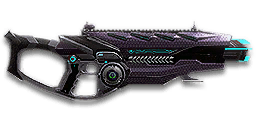

← Back to the Equinox VE2 comparison
Sage Guide · Vanu Sovereignty · Combat Medic · Engineer · Heavy Assault (ASP)
The versatile Vanu assault rifle: no bullet drop, fast aimed strafing, and an underbarrel for every job. It costs 650 certs — this page teaches you to win fights with it today.
The one-line verdict: a steady, honest all-rounder that does nothing badly and everything well enough. It rewards good aim and short bursts, and punishes spray-and-pray. Fight between 13 and 50 metres and it will carry you.

The Equinox VE2 · Vanu Sovereignty · 30-round magazine · 650 certs / 499 DBC
Picture the scene, because you've probably lived it: you're sprinting across a courtyard, an enemy appears, and you do everything at once — hold the trigger down while you're still running, then press aim-down-sights (ADS) a split-second later, finger still down. The sight picture snaps in, it looks precise… and your bullets spray everywhere except the man in your crosshair. He kills you. It feels like the game cheated. It didn't — here's what actually happened.
Three moments, one bad habit. Read left to right.
Read it this way: the disaster is set before the sight ever comes up. Sprinting puts your cone at 7.0°, hipfiring widens it further (+0.1° per shot), and pressing ADS does not shrink a cone that is already bloomed — the scope only gives you a precise picture. Your bullets keep flying out of the wide cone you built while running.
Same courtyard, same enemy. Three beats, in order — never two at once.
Stop → aim → fire. If you take one habit from this entire page, take this one. You'll practise exactly this rhythm in the simulator in section 04.
Inside about 13 metres, don't ADS at all — hipfire and keep moving. No sight to raise, no settling to wait for, and stopping is optional: the hipfire ring while moving at 13 m is about 0.51 m wide — roughly his torso — so most rounds still land. The three-beat fix is a mid-range habit; up close, your movement is your defence.
You started firing from a sprint, from the hip. Sprinting is the least accurate state in the game: your cone of fire starts at 7.0° — fully bloomed, the widest it can ever be. Every shot you fire from the hip widens it further still (+0.1° per shot).
Then you pressed ADS mid-hold — and nothing reset. Aiming down sights does not shrink a cone of fire that is already bloomed. The scope only gives you a precise picture; the bullets keep flying out of the wide cone you built while running and hipfiring. That's the whole mystery: accurate-looking aim, wildly inaccurate gun.
Two timers stack the deck further: your gun needs about 0.3 s to settle after a sprint, and raising the sight itself takes ~0.15 s. Trigger held through all of it means your first half-second of fire is pure confetti.
1 · Feet. Let go of sprint (and the trigger, if you're already holding it). Stop, or drop into a strafe — anything but a full sprint.
2 · Sight. Press ADS and let the sight come up. This takes a heartbeat — that's fine, a half-second of patience beats a dead sprint.
3 · Trigger. Now fire. Starting from the aimed cone of 0.1°, your first shots land where the dot points, and you control the bloom from zero instead of inheriting a maxed-out cone.
Stop → aim → fire. If you take one habit from this entire page, take this one. You'll practise exactly this rhythm in the simulator in section 04.
Every enemy infantry has 1,000 health (500 shield + 500 health). Your bullet does 143 damage up close, fading to 125 at long range — and it fades slowly, which is this gun's quiet strength. Headshots count double, leg shots count less (×0.9). That gives you three numbers worth memorising:
| Range | Damage | Head | Chest | Legs | Chest vs shielded Heavy |
|---|---|---|---|---|---|
| Close · 0–10 m | 143 | 4 | 7 | 8 | 11 |
| Mid · 10–65 m | 143→125 | 4 | 8 | 9 | 11–12 |
| Far · 65 m+ | 125 | 4 | 8 | 9 | 12 |
Perfect-accuracy times to kill: 4 headshots ≈ 0.28 s, 7 chest shots ≈ 0.55 s up close. In real fights you'll land maybe half your rounds — still, this is why the head matters so much on this gun. And notice the far row: even at 100 m you still kill in 8 chest shots. The Equinox doesn't hit a wall the way other starters do.
Full power to 10 m, then a slow, steady slide to 125 at 65 m — and it stays at 125 forever after. The gold line shows Soft Point Ammunition, which stretches full power to 15 m.
One gun, four fighting styles. The right technique changes with distance — use the range finder below to see what your bullets do at any range, then learn the four bands underneath it.
How to fight hereAim down sights at the upper chest and neck. Fire in bursts of 5–8 — your recoil climbs into the head for free damage.
Aim: centre of the chest, from the hip. Keep moving.
Scoping in costs you time and slows you down — at arm's length that gets you killed. The Equinox has good hip accuracy for an assault rifle (1.75° standing still, 2.25° on the move). Strafe side to side (A/D) while firing so you're hard to track — up close, your movement is your defence.
Aim: neck / upper chest. Bursts of 5–8 rounds.
This is where the gun earns its keep: near-full 143 damage, fast handling, 652 RPM, and no bullet drop to think about. Start your crosshair at the neck — the natural upward climb walks your shots into the head, and 4 head hits end the fight in just over a quarter of a second. Strafe while scoped; you keep 75% of your move speed while aiming, faster than most rifles, so a moving target still beats a still one.
Aim: chest. Bursts of 5–8 rounds, pause between them.
Damage is sliding toward 125 and your cone of fire blooms if you hold the trigger. Fire a burst, release for a split second to let accuracy reset, fire again. The recoil drifts up and to the right (17–20°), so pull your mouse gently down and to the left. Crouch or stand still when you can — both tighten your shots.
Aim: chest. Taps of 3–5 rounds at exposed targets only.
At 125 damage you need 8 chest hits — and with bloom fighting you the whole way, that's a long, loud advertisement of your position. Take these shots at stationary or fleeing targets, medics reviving, and engineers on turrets. Otherwise, your better play is to close the distance behind cover. Knowing when not to shoot is a skill too.
Your accuracy is decided by two things before skill even enters it: what your body is doing (your stance sets the starting cone of fire) and what your finger is doing (holding the trigger grows that cone with every shot). The Equinox also has a fire-mode switch of its own — press B to cycle Auto, 3-round Burst, and Semi-Auto — but the bursts that matter most are the ones you make with your finger, not the setting on the gun.
| Stance | Starting cone | What it means for you |
|---|---|---|
| Sprinting | 7.0° | Maxed out — the widest the cone can be. This is the section 01 disaster: never start firing from a sprint. |
| Hipfire, moving | 2.25° | Walking or strafing from the hip. Fine inside ~13 m, leaks rounds past the target beyond it. |
| Hipfire, standing | 1.75° | Your point-blank default. The 0.40 m ring at 13 m in section 05 is this stance drawn out. |
| Hipfire, crouched | 1.25° | The tightest hipfire you have (1.5° if you crouch-walk). Crouch when holding a doorway from the hip. |
| Aimed (ADS), feet planted | 0.1° | Standing or crouched makes no difference here — more than seventeen times tighter than hipfire. This is why section 01's order matters. |
| Aimed (ADS), strafing | 0.25° | Same tight start, and you keep 75% of your move speed (0.75×) — faster than most rifles' 50%. Strafe between bursts to stay hard to hit; plant your feet during each burst. |
| Mode | How your finger does it | Use it at |
|---|---|---|
| The mag dump | Hold the trigger and don't let go | Point blank only, or suppressing a doorway. Bloom maxes out fast — past ~8 rounds you're spraying, not aiming. |
| Bursts — the default | Hold for 5 rounds, release ~0.15 s, hold again. 6–8 rounds is fine while you're learning | Almost everything, 13–50 m. Each release resets the cone, so every burst starts at 0.1°. |
| Tap-fire | Short taps of 3–5, or single clicks, with a real pause between | 50 m and out, at exposed or stationary targets. Slow, but every round goes where the dot is. |
| Built-in 3-round burst | Press B to switch the gun itself to 3-round burst mode | Long-range tap work, or as training wheels while your finger learns the rhythm. Most players stay in Auto and burst with their finger — 5-round finger bursts kill faster than the gun's fixed 3-round ones. |
A target 30 m away, aiming down sights. Press and hold FIRE (mouse, touch, or hold Space with the button focused) and watch the holes walk wider the longer you hold — that's firing from an ever-growing cone. Release, let the cone reset, fire again. Aim for bursts of 5; 6–8 is tolerable while you're new. This practice window is shared by the whole Sage series: it's driven by a weapon profile plugged into the window — here the Equinox VE2's (652 RPM, 0.1° starting cone, 0.05° bloom per shot, target at 30 m) — and the spread is drawn at true scale from those numbers.
Cone of fire — fills as you hold, empties when you release.
Your bursts will be graded here — green at 5 rounds, tolerable up to 8.
Some things are easier to show than to say. Here's what your bullets actually do: how wide hipfire spreads at 13 metres, what a good burst rhythm looks like, and what the 2x sight really changes. The hands-on version — holding the trigger yourself — is the practice window in section 04.
A full-size target 13 m away — the far edge of a room fight. The rings show where hipfire rounds land around your aim point (the chest). Sizes are drawn to scale from the gun's real cone-of-fire numbers.
Read it this way: standing still, the 0.40 m ring roughly covers the chest — most rounds hit a target this size, which is why hipfire works point-blank. But move and it grows to 0.51 m — wider than the torso — so the edge rounds start leaking past him, and the rings only grow with distance while the man doesn't. Past ~13 m that's rounds missing entirely: the exact moment to switch to aiming down sights, where the spread shrinks to a dot. (Ring sizes use the real geometry: spread diameter = 2 × distance × tan(cone ÷ 2).)
Every shot widens your cone of fire ("bloom"). Releasing the trigger for a heartbeat resets it. Same 18 rounds, two very different outcomes:
The target pattern is bursts of about 5 rounds — that's the ideal. Bursts of 6–8 are fine while you're new (call it newbie tolerance). Past that, the bloom (0.05° per shot aimed, 0.1° from the hip) keeps growing with every shot — the cone never stops growing while you hold the trigger, so the extra bullets mostly decorate the wall behind your enemy instead of hitting him. Short bursts also leave you rounds for the second enemy — remember, the magazine is only 30.
No zoom. The target at 35 m is small but the view is wide open — you see the crate, the tower, and the next enemy coming. Fast to aim, nothing blocks your edges. Best inside ~40 m.
Same target, same 35 m — but he looks twice as tall, so placing shots on his chest and head gets much easier. The price: your view narrows to the round window, the crate and tower are gone, and close targets feel fast and huge. Best at 25–50 m.
That's the whole 30-cert decision from section 06 in one picture: 1x for awareness, 2x for precision. Most veterans carry both and swap per base — indoors 1x, open ground 2x.
The Equinox VE2 costs 650 certs to unlock, and it arrives bare — iron sights, no grip, no extras. That's fine: the gun is already good. Everything below is an optional sidegrade, not an upgrade. Buy in the order shown and stop whenever the gun feels right. Two warnings first: there is no Extended Magazine for this gun — it simply doesn't exist for the Equinox, so if a loadout video tells you to buy one, it's for a different weapon. And the rail slot holds one thing: a grip, a laser, a torch, or an underbarrel — never two at once.
What the gun ships with. Usable, but the chunky VS irons block more of the target than a red dot does.
Good: your first fights while you save 30 certs for the reflex sight below.
Bad: as a permanent choice — a clean dot is worth 30 certs.
A clean red-dot sight with no zoom. Your best all-round option, and the first thing worth buying.
Good: everywhere indoors and out to ~40 m — which is most PlanetSide fights.
Bad: picking out targets past 50 m; that's what the 2x is for.
Doubles your view magnification. Costs almost nothing — the price of one kill or two.
Good: open-field bases, tower fights, and your 25–50 m burst game. Swap between 1x and 2x per fight.
Bad: tight indoor rooms — the zoom makes close targets feel fast and huge.
Night-vision sight: enemies glow white against a dark view, and it sees through smoke.
Good: night fights, smoky doorways, spotting infiltrators by their outline.
Bad: daytime and long range — its view is short-ranged and washes out in bright light.
3.4x and 4x magnification — sniper-style zoom on an automatic rifle.
Good: almost nothing a beginner does — recoil magnifies too, and tunnels your vision.
Bad: any fight inside 30 m, which is where you'll spend your first hundred hours.
The Equinox's recoil is already mild. Plenty of veterans run this slot empty forever.
Good: your first weeks. Spend certs on your medical applicator, repair tool and suit slots first.
Bad: nothing — there's no downside to an empty slot.
Cuts vertical recoil by 30%. Costs you: hipfire spread grows 15%, and enemies see you on the minimap from 35 m farther away when you fire.
Good: if you mostly aim down sights at mid-range and the upward climb bothers you.
Bad: hipfire builds and sneaky play — you get louder on the map and sloppier from the hip.
Your aimed bloom grows 20% slower — tighter groups at 40 m and out. Costs you: you move 20% slower while aiming (your 0.75× ADS speed drops to 0.60×).
Good: open-ground fights where you hold angles and tap-fire at range. Pairs well with the 2x sight.
Bad: close-quarters and point holds — the slower aimed strafe gets you killed there.
Hipfire bloom grows 40% slower — much steadier hip spraying. But vertical recoil rises 20% when you do aim.
Good: a dedicated close-quarters build paired with the Laser Sight.
Bad: general play — it taxes the aimed shooting you'll do most.
You vanish from the minimap when firing and your shots are quiet. In exchange, damage starts dropping off 20 m sooner and bullets fly 15% slower (615 → 523 m/s) — harder to lead moving targets.
Good: flanking behind enemy lines, rooftop and tree work, solo play behind the front.
Bad: front-line fighting where everyone already knows where you are — you pay the damage cost for stealth you don't need.
Hides your muzzle flash so your own view stays clear at night — but you appear on enemy minimaps from 15 m farther away.
Good: night fights where your own flash blinds you. A comfort pick, nothing more.
Bad: as an early purchase — it changes no fight outcome. Buy it last, if ever.
Cuts side-to-side recoil by 25%, keeping your bursts on a single target. Tiny cost: weapon swap is 0.15 s slower.
Good: the default for aimed, mid-range play — leave it on until you deliberately build for hipfire or an underbarrel.
Bad: nothing meaningful. It only stops helping if you never aim down sights.
Hipfire accuracy improves by a third (33% tighter cone). Replaces the Forward Grip — you can't have both.
Good: indoor point-holds and stairwell fights where you hipfire inside 13 m.
Bad: open bases — you give up aimed recoil control for a bonus you rarely use.
The first shot of each burst kicks 60% less — but side-to-side recoil rises 10% on everything.
Good: disciplined burst and tap-fire at 40 m+, where every burst starts fresh. Your first-shot kick is 2.25×, the biggest jump of any shot in the burst, so taming it pays.
Bad: beginners' longer bursts — if you're holding the trigger past 8 rounds, the first-shot bonus barely matters.
A single-shot underbarrel grenade launcher. Press Gear Slot 1 (1 by default) to switch to it. The grenade only arms after travelling 10 m, then explodes on contact — and the gun takes 0.25 s longer to draw with it fitted.
Good: lobbing a grenade into a doorway or over a wall before you push in, and clearing clustered enemies off a point. The reason many players buy this gun at all.
Bad: point-blank panic shots — inside 10 m the grenade won't arm — and any build where you need the Forward Grip's recoil control. One rail slot, one choice.
A single-shot underbarrel shotgun round. Press Gear Slot 1 (1 by default) to switch to it. Same 0.25 s slower draw as the other underbarrels.
Good: one emergency blast when someone rounds a corner on top of you and your magazine is dry.
Bad: as a plan rather than a panic button — one shell, a slow switch, and you gave up your grip or laser for it.
An underbarrel smoke grenade launcher. Press Gear Slot 1 (1 by default) to switch to it. Same 0.25 s slower draw as the other underbarrels.
Good: covering a revive, a push across open ground, or a retreat — smoke your own doorway and move in it. Combine with the HS/NV scope, which sees through smoke.
Bad: solo play — smoke helps your squad more than it helps you, and it blinds your own team if you place it badly.
A torch whose beam reveals cloaked infiltrators. Toggle it with the attachment key (X by default).
Good: hunting a stalker infiltrator camping your capture point — sweep corners with it.
Bad: as your everyday rail — it gives zero accuracy help, and the beam advertises your position.
Full 143 damage now reaches to 15 m instead of 10 m (the gold line on the chart above) — your 7-shot kill stretches ~5 m farther out. Cost: bullets fly 10% slower (615 → 554 m/s).
Good: nearly always — most duels happen at 10–20 m, exactly where this extends your 7-shot kill.
Bad: long-range duels against runners, where the slower bullet needs more lead. A small price.
Bullets fly 10% faster (615 → 677 m/s) and minimum damage now holds to 85 m instead of 65 m. Cost: full damage starts fading 2 m sooner (10 m → 8 m).
Good: long-range tap-fire at runners and revivers, where the faster bullet needs less lead.
Bad: close fights — you give up 2 m of full damage for speed you don't need at arm's length.
0 certs · Day one
What the 650 certs buy you. Genuinely good — learn the gun on this before spending anything.
230 certs · Recommended
The best value in this whole guide. Covers every fight from a doorway to a tower courtyard.
230 certs · Indoor brawler
Built to hipfire down stairwells and hold a capture point room. Swap back to the All-Rounder outdoors.
230 certs · Support
Lob a grenade into a doorway, then push with the rifle. The launcher arms after 10 m — don't use it point-blank. Engineers: your ammo pack keeps the grenades coming.
Headshots deal double damage: 4 kills up close versus 7 to the chest. Don't aim at the head directly — aim at the neck and let the gun's natural upward climb carry shots two and three into the skull. It's the single biggest damage upgrade you own, and it's free.
Every shot widens your cone of fire. Holding the trigger past ~8 rounds at range means later bullets fly around your target, not into it. Five rounds is the ideal burst; release the trigger for a heartbeat between bursts — your accuracy resets and your hits per magazine roughly double.
Reloading with even 1 bullet left takes 1.9 s; an empty gun takes 2.3 s — nearly half a second you don't need to give away mid-fight. Count roughly: after a kill or ~20 rounds, duck behind cover and reload early. Treat the last 10 rounds as your emergency reserve, not your working magazine.
Walk with your crosshair at head height, pointed where an enemy's head will appear — a doorway edge, a corner, stairs. Most beginners lose fights in the half-second spent dragging the crosshair onto target. While firing, tap A/D to strafe: you keep 75% of your speed while aiming, faster than most rifles, so a moving target is dramatically harder to headshot back.
Your damage, accuracy and handling all shine at close-mid range. Sprint between cover, use buildings and rocks as stepping stones, and arrive at your range before opening fire. The player who chooses the range usually wins the duel — make it you.
Medic: revive and heal between duels — a revived squadmate is worth more than one more kill. Engineer: drop your ammo pack before the fight starts, and repair the MAXes holding the point. Heavy (ASP): shield up before the peek, not during it. The rifle wins the duel; the kit wins the fight after it.
Every gun has a price. Here's where the Equinox VE2 pays — and the habit that covers each hole.
Thirty rounds vanish fast when suppressing a doorway, and there is no extended-magazine option on this gun at all — it doesn't exist for the Equinox.
Play around it: burst discipline (habit 2) and early reloads (habit 3). Your 1.9 s reload is quick — reloading often is the design, not a failure.
Your first-shot recoil multiplier is 2.25× — the first round of every burst leaps more than any shot after it. Hold the trigger and the climb never settles; start a burst carelessly and the opening round is the one that misses.
Play around it: make the first shot count — be fully aimed before you press the trigger (section 01), and consider the Angled Forward Grip, which cuts that first-shot kick by 60%.
Against a faster-firing rifle inside 10 m, you kill in 552 ms and it kills in 480 ms — about 13% faster than you, same damage per bullet, just a higher fire rate. Face-to-face brawls at arm's length are its home turf, not yours.
Play around it: don't take the fair face-to-face fight. Use your 0.75× aimed strafe, break line of sight, and fight at 15–40 m, where your damage holds and the race evens out.
Its recoil angle is 17–20° rightward. In a long burst your aim walks off the target's right shoulder — you'll see this clearly in the VR drill below.
Play around it: pull your mouse down-left while firing, in the opposite direction of the climb. The Forward Grip already trims the sideways part by 25%.
You move at 75% speed while aiming down sights (0.75×) — better than most rifles' 50%, but still slower than hipfire, and the gun takes 0.65 s to swap to.
Play around it: hipfire inside 13 m instead of scoping (that's the Point Hold build's whole idea), and swap weapons behind cover, never in the open.
Open the world map, travel to VR Training, and run these on the target dummies. Five minutes before a play session beats an hour of dying confused.
Aim at a wall 20 m away and empty a full magazine without touching the mouse. Watch the bullet pattern climb up-right at 17–20° — that's your gun's fingerprint. Repeat, this time pulling down-left, until the group stays fist-sized.
Walk the dummy range keeping your crosshair glued to neck height the whole time, snapping to each new target without dipping to the floor or sky. Slow and clean first; speed comes on its own.
At 30–40 m, kill dummies with bursts of 5–8, releasing the trigger fully between bursts. If a burst goes wide, shorten it. Goal: whole kills without a single wild round.
Pick a dummy, stand 5 m away, and circle it with A/D while hipfiring it down without stopping. This is your point-blank survival skill — the one that fires while your movement does the defending.
Fire exactly 20 rounds, step behind a pillar, reload, repeat. Train your hands to reload early and only in cover until it's automatic — in real fights you'll do it without thinking, which is the point.